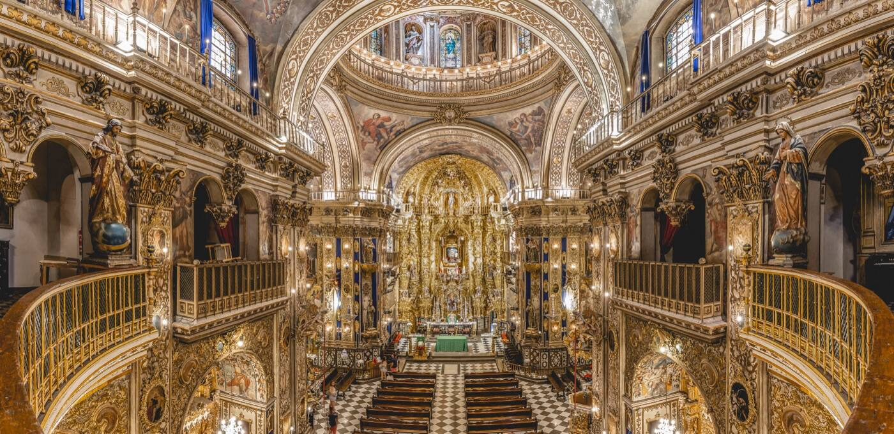
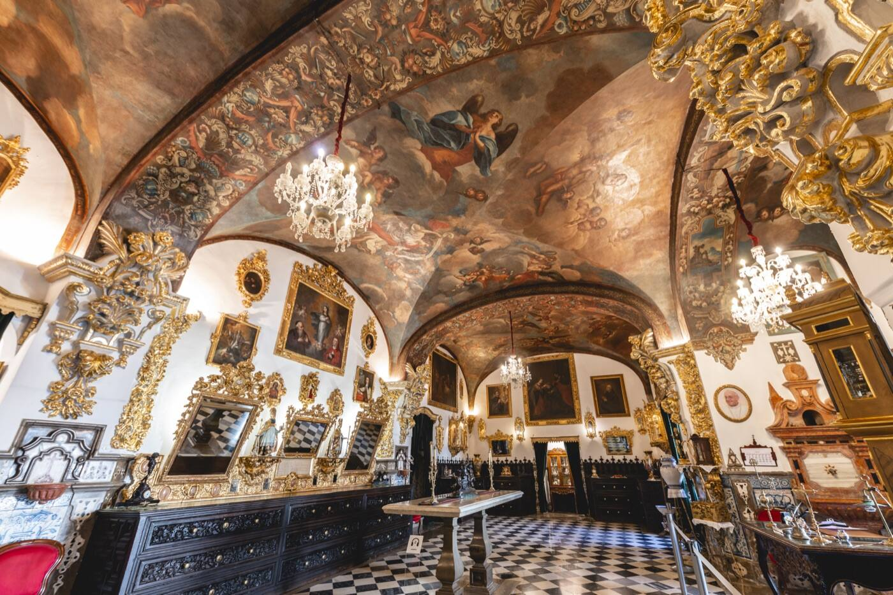

Basílica de San Juan de Dios
Granada · barroco del siglo XVIII
Los espacios
Audioguía oficial · con tecnología OptimaGuía de Óptima Cultura
Prototipo funcional v5 · textos provisionales
Plano
Ajustes
En el centro está la mesa calicera.
Voz con ElevenLabs v4 Turbo y guía con IA (Claude) limitado al contenido de la visita; sin conexión, la voz del dispositivo y respuestas preparadas. La ubicación y la realidad aumentada están simuladas: los puntos se colocan al azar, los modelos 3D y los portales son provisionales. Música generada con ElevenLabs Music. Textos provisionales.
Mueve el móvil despaciopara reconocer la sala
Sin cámara: vista simulada con la foto de la sala
Sonando
La nave
¿Qué te ha parecido la visita?
Del 1 al 10
Gracias por tu visita
Tu valoración ayuda a la basílica a mejorar la audioguía.
La sacristía
Ubicación simulada en el prototipo: llegas solo en unos segundos.Pellizca para acercar Modelo provisional
Mesa calicera
La pista de la sala sigue sonando. ¿Cuándo quieres escuchar esta?
«Ahora» pausa la pista de la sala y la retoma al acabar.Los espacios
Idioma

Así se verá¿Podemos usar la cámara?
Para mostrar los puntos sobre la sala y las obras en 3D.